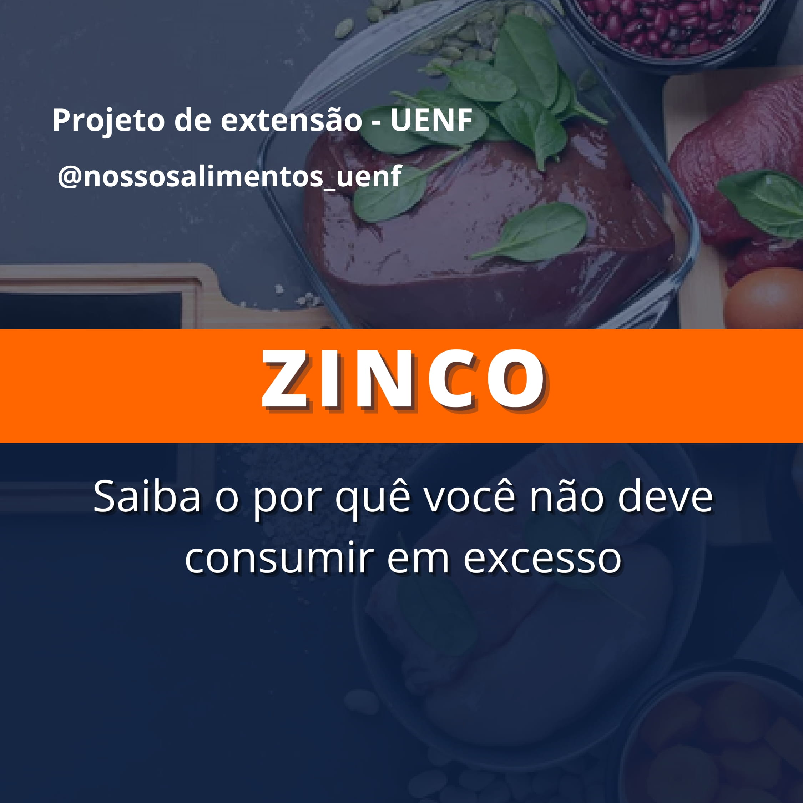
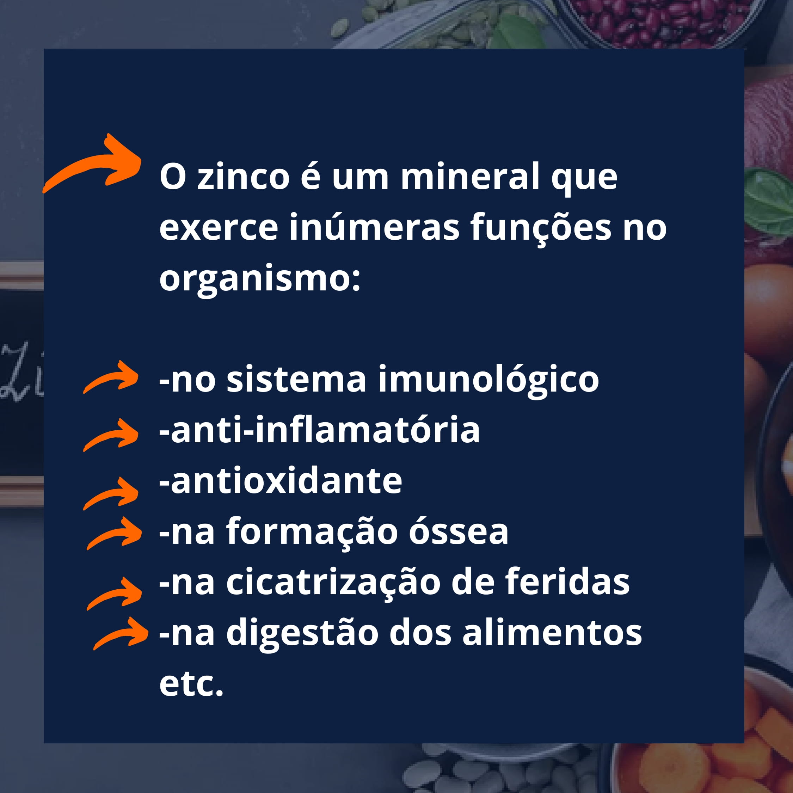
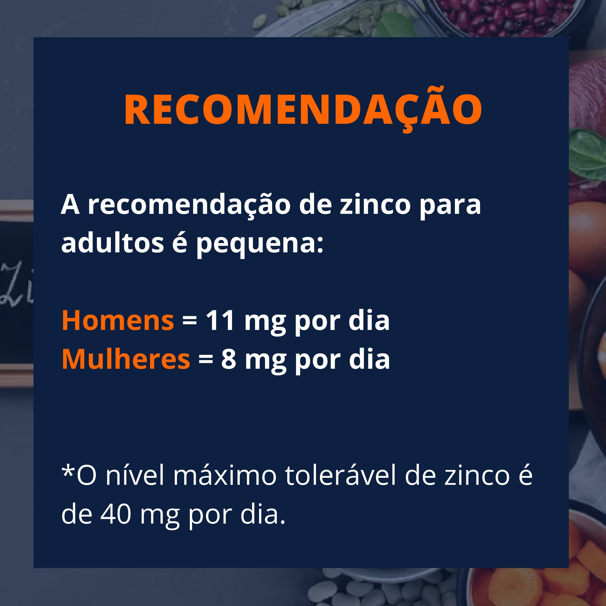
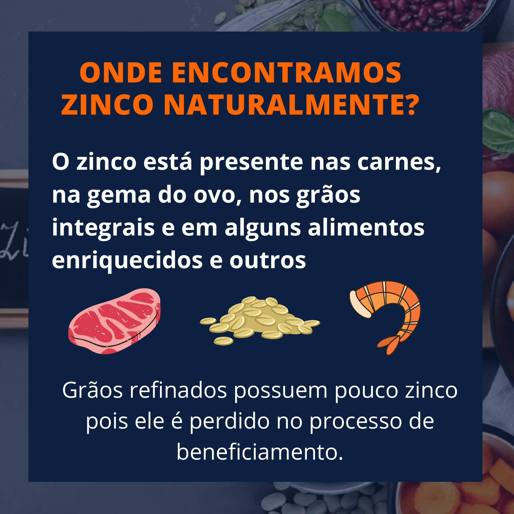
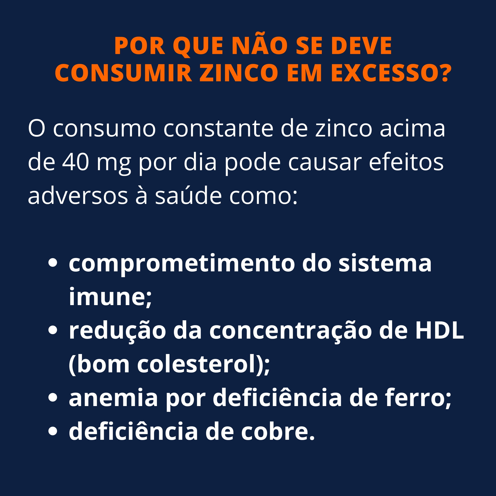

Blog Nossos Alimentos - NUTRIÇÃO UENF
Início
Saúde mental
Vídeos
1º - DIETAS COM TEOR MODERADO DE CARBOIDRATOS PROMOVEM MAIOR EXPECTATIVA DE VIDA - Projeto nossos Alimentos
TEasf
TEasfasdfj
TEasfasdfj
Sobre
Zinco: Saiba Porquê você não deve consumir em excesso
junho 23, 2021
    